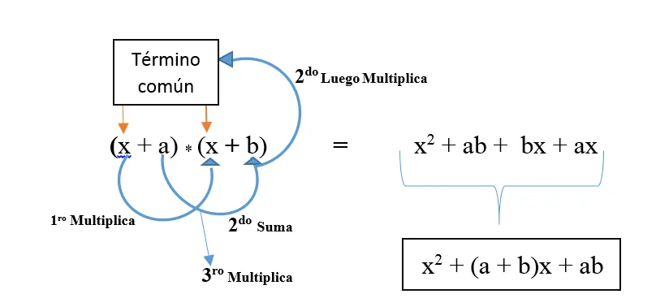
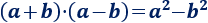
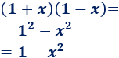
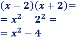
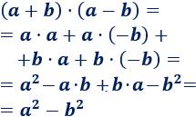
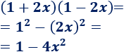
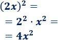
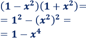

Matematicas
consulta
1. Que son los productos notables.
Los productos notables son expresiones algebraicas que vienen de un producto que conocemos porque sigue reglas fijas y cuyo resultado puede ser escrito por simple inspección, es decir, sin verificar la multiplicación. Estas operaciones son fáciles de recordar sin necesidad de efectuar la multiplicación correspondiente.

2. productos de la suma por la diferencia
1.formula
Se conoce como suma por diferencia a la siguiente fórmula para calcular el producto de dos binomios conjugados:

La fórmula permite el calcular el producto rápidamente.
2. Ejemplos


3. Demostración
Para demostrar la fórmula es suficiente con calcular el producto:

4. Más ejemplos

Observad que el segundo sumando es un producto, así que hemos aplicado la propiedad potencia de un producto:

Ejmplo 4

Recorda que la potencia de una potencia se calcula multiplicando los exponentes. Por eso,

3. productos notables de 2 binomios de la forma ( a + b ) . ( a + c)
1.Para multiplicar dos binomios, puedes usar la propiedad distributiva. Esto significa que cada término del primer binomio se multiplica por cada término del segundo binomio. Vamos a hacerlo paso a paso.
Multiplica 𝑎 a por cada término del segundo binomio:
* a⋅(a+c)=a⋅a+a⋅c=a 2 +ac
2.Multiplica 𝑏 por cada término del segundo binomio:
* b⋅(a+c)=b⋅a+b⋅c=ab+bc
3. Ahora, suma todos los términos obtenidos:
a 2 +ac+ab+bc
Por lo tanto, el resultado de (𝑎+𝑏)(𝑎+𝑐) es:
a 2 +ab+ac+bc
Este resultado es útil para simplificar expresiones o resolver ecuaciones. ¿Hay algo más que te gustaría saber sobre este tema?
4. cuadrado de un binomio suma y resta .
Cuadrado de un binomio (suma)
La fórmula para el cuadrado de un binomio en suma es:
(a+b) 2 =a2 + 2ab +b2
Ejemplo:

Cuadrado de un binomio (resta)
La fórmula para el cuadrado de un binomio en resta es:
(a−b) 2=a 2 −2ab+b 2
Ejemplo:

5.el cubo de la suma de 2 terminos y cubo de la diferencia de 2 terminos
Cubo de la Suma El cubo de la suma de dos términos
 se expresa como
se expresa como  .Para expandirlo, utilizamos la siguiente fórmula:
.Para expandirlo, utilizamos la siguiente fórmula: 


6. Que es factorizacion
La factorización es un proceso matemático que consiste en descomponer una expresión algebraica en el producto de factores más simples. Esto puede ayudar a resolver ecuaciones, simplificar expresiones y entender mejor las propiedades de los números y polinomios.


Ventajas de la Factorización
Resolución de ecuaciones: La factorización permite resolver ecuaciones cuadráticas de forma más sencilla.
Simplificación: Ayuda a simplificar expresiones algebraicas, lo que puede facilitar cálculos.
Análisis de raíces: Permite encontrar las raíces o ceros de un polinomio, que son los valores que hacen que la expresión sea igual a cero.

7. la factoizacion por factor comun
* La factorización por factor común es uno de los métodos más sencillos y útiles para simplificar expresiones algebraicas. Este proceso consiste en identificar y extraer el factor común que se repite en todos los términos de la expresión.
1. Identificación del Factor Común: Observa todos los términos de la expresión y determina cuál es el factor que aparece en cada uno de ellos. Esto puede ser un número, una variable o una combinación de ambos.
2.Extracción del Factor Común: Una vez que has identificado el factor común, lo sacas fuera de la expresión y escribes los términos restantes en paréntesis.
3.Verificación: Multiplica de nuevo el factor común por los términos dentro del paréntesis para asegurarte de que recuperas la expresión original.


Conclusión.
*La factorización por factor común es una técnica poderosa que te permite simplificar expresiones algebraicas. Recuerda siempre verificar tu trabajo multiplicando el factor común por los términos dentro del paréntesis.
8. factor comun por agrupacion de terminos
* La factorización por agrupación de términos es un método que se utiliza cuando tienes una expresión con más de dos términos y no hay un factor común evidente en todos ellos. Este método consiste en agrupar los términos de la expresión y luego factorizar cada grupo por separado.
Pasos para la Factorización por Agrupación :
1.Agrupar los Términos: Divide la expresión en grupos de términos. A menudo, se agrupan en pares, pero no siempre es necesario.
2.Factorizar Cada Grupo: Encuentra el factor común en cada grupo y factorízalo.
3. Revisar la Estructura: Después de factorizar, verifica si hay un factor común en los nuevos términos resultantes.
4.Factorizar el Factor Común: Si hay un factor común en los términos resultantes, sácale el factor común.
5. Verificación: Multiplica el resultado para asegurarte de que obtienes la expresión original.


Conclusión :
La factorización por agrupación es una técnica muy útil para simplificar expresiones polinómicas con múltiples términos. Es especialmente valiosa cuando no hay un factor común obvio en todos los términos.
9. diferencia de cuadrado
*La diferencia de cuadrados es una identidad algebraica muy común que dice que:

Donde 𝑎 y 𝑏 son dos números o expresiones algebraicas.
¿Por qué ocurre esto?
Esta identidad se deriva de la propiedad distributiva de la multiplicación. Para entenderla, veamos cómo funciona la multiplicación de binomios:

Ahora distribuimos los términos:

Como los términos + 𝑎 𝑏 + y − 𝑎 𝑏 se cancelan entre sí, nos queda:
 >
> 
* Resumen

10.trinomio cuadrado perfecto *Un trinomio cuadrado perfecto es una expresión algebraica que proviene de elevar un binomio al cuadrado. Tiene la forma:

¿Cómo identificar un trinomio cuadrado perfecto?
1.El primer y el último término deben ser cuadrados perfectos.
2.El término del medio debe ser el doble del producto de las raíces cuadradas del primero y el último término.


*Pasos para factorizar un trinomio cuadrado perfecto .
1.Identifica si el primer y el tercer término son cuadrados perfectos.
2.Verifica si el término del medio es el doble del producto de las raíces cuadradas de los extremos.
3. Escribe la factorización como el cuadrado de un binomio.

11.


Objetivo:
*La idea es factorizar el trinomio. Factorizar significa escribir el trinomio como el producto de dos binomios. Queremos transformar algo como

¿Cómo se factoriza?
La factorización consiste en encontrar dos números que
*ultiplicados den el valor de 𝑐 .
* Sumados den el valor de 𝑏 .


12.


*Nuestro objetivo es factorizar el trinomio, es decir, escribirlo como el producto de dos binomios. La forma general será algo como:

Pero, para llegar a eso, necesitamos seguir un método que se llama factorización por agrupación.
*Método de factorización por agrupación
Vamos a usar este método para resolver un ejemplo, ya que es uno de los procedimientos más comunes cuando